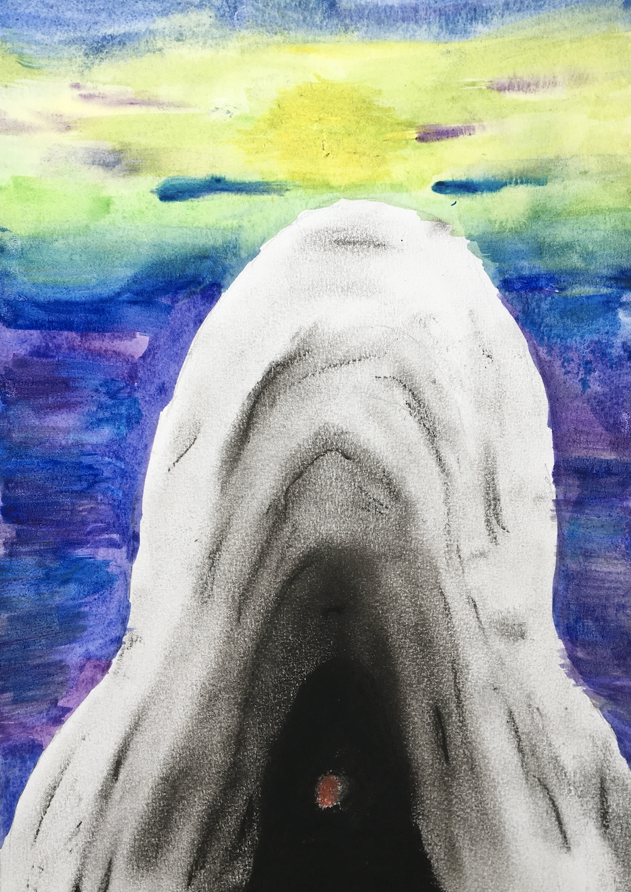

Expressionist Personal Image

Medium: Chalk Pastels, Color Pencil and Watercolor Paint on Watercolor Paper
This was one of our projects where we were supposed to combine both what we had learned over the cycle and our inner emotions. Based on Edvard Munch's iconic painting The Scream, we sketched an abstract image which was supposed to express certain emotions which we were feeling. I expressed both contemplation and innovation as my feelings, drawing a red dot to express my soul, a series of dark, amorphous shapes which represent the challenges it has to overcome. This represents contemplation, and the background of watercolor, from darker to lighter colors, represents my journey through innovation. This was one of my favorite assignments, as I felt that it evenly combined both my feelings and techniques that I had learned.